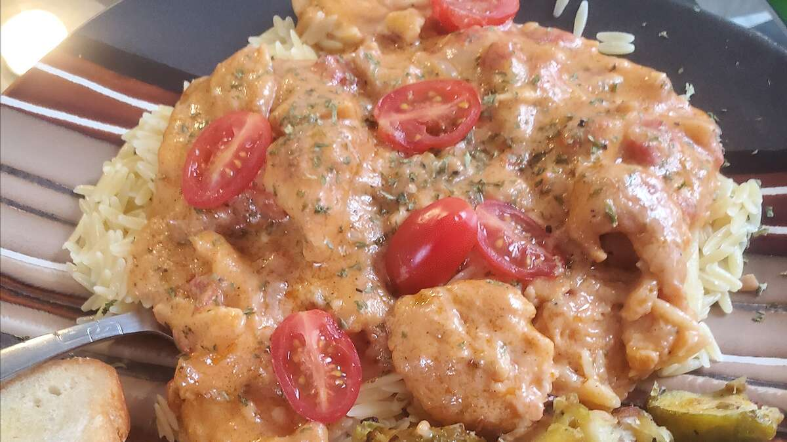

Chicken Paprika

Description
On a cold winters day warm up with some of moms's famous chicken paprika. This dish is nutritious, hearty
and full of flavor.
Ingredients
- Marys organic chicken
- Botson Fancy Rice
- Paprika
- Flower
- Salt
- Pepper
- Garlic
- Avocado Oil
- Cherry Tomato's
Steps
- Get the supplies
- Fry them up in a cast iron skillet
- Pour contents over fresh rice